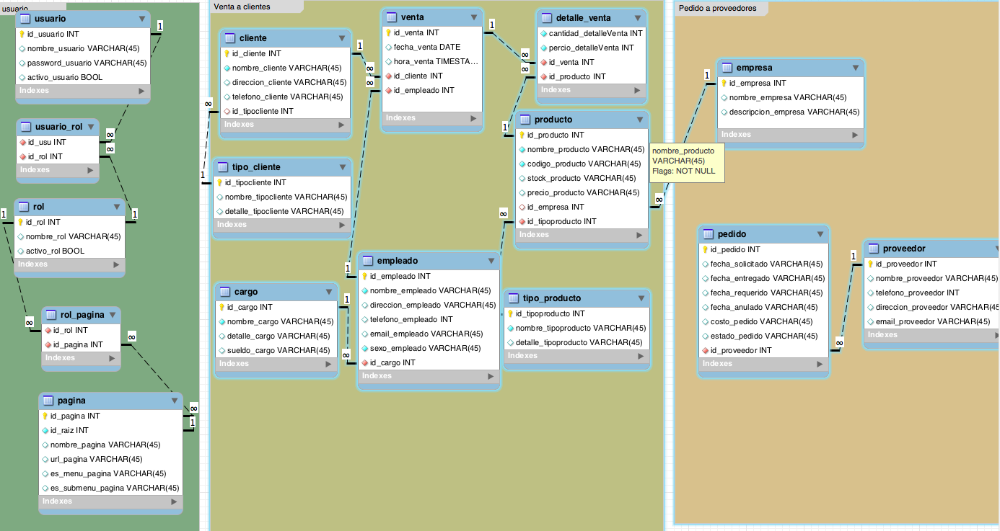
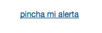

Framework YII
Instructor Jose Luis Yacelly Ramos / @yacel100
Jueves, 21 de Agosto del 2014
- Dia 1 - Introduccion, mi primera App Web
- Dia 2 - Estructura de directorios
- Dia 3 - Generador de codigo
- Dia 4 - Personalizando nuestra App(Temas y extensiones)
- Dia 5 - trabajando en la app con las herramientas
- Dia 6 - trabajando con git, personalizando las vista
- Dia 7 - widgets y cgridview
- Dia 8 - manejo del dataprovider
- Dia 9 - formularios en yii
Razones por las que deberías usar Frameworks en PHP
Los Frameworks en PHP han recibido mucha atención en los ultimos años de parte de la comunidad de desarrolladores web
1. Organización de código y de archivos

2. Utilidades y Librerias

3. Patrón MVC
El famoso Modelo Vista Controlador data de allá en el año 1979, cuando un hombre llamado Trygve Reenskaug (un noruego egresado de ciencias de la computación) lo describio por primera vez.
Modelo representa tu estructura de datos, usualmente por interfaces con las bases de datos.
Vistas respresentan el contenido de las plantillas de la página y datos de salida
Controladores gestiona los request de la página y los enlaza.
4. Menos código y mas desarrollo
Hay que cruzar toda una curva de aprendizaje para cualquier framework en PHP. Pero una vez lo comprendes, disfrutaras los beneficios del desarrollo rápido de aplicaciones.
5. Soporte de la comunidad

comunidad YII en español: http://yiiframeworkenespanol.org
6. Seguridad
En PHP puedes encontrar muchas funciones para filtrar datos de entrada y de salida para proteger tu sitio de ciertos ataques.
Porque Yii?
Yii es un framework generico de programación Web que puede ser utilzado para todo tipo de aplicaciones Web. Gracias a que es liviano de correr y está equipado con soluciones de cacheo sofisticadas, es adecuado para desarrollar aplicaciones de grán tráfico como portales, foros, sistemas de administración de contenidos (CMS), Sistemas de comercio electrónico (e-commerce), etc.
Cómo se compara Yii con otros frameworks?
Como la mayoría de los frameworks PHP, Yii es un framework MVC (modelo-vista-controlador).
Yii Yii sobresale frente a frameworks PHP en su eficiencia, su gran cantidad de características y su clara documentación.
Yii ha sido diseñado cuidadosamente desde el principio para el desarrollo de aplicaciones de Web. No es ni un subproducto de un proyecto ni un conglomerado de trabajo de terceros. Es el resultado de la basta experiencia de los autores en desarrollo de aplicaciones Web y de la investigación y la reflexión de los más populares los frameworks de programación Web y aplicaciones.
instalando yii
- Descargar el framework Yii de yiiframework.com.
- Descomprimir el archivo a un directorio accesible por el servicio Web.
Apache2-Linux(/var/www/)
Xampp-windows(c:/xampp/htdocs/)
Xampp-MacOs(/Applications/XAMPP/xamppfiles/htdocs)
Requerimiento
http://localhost/path/to/yii/requirements/index.php
El requerimiento mínimo de Yii es que su server soporte PHP 5.1.0 o superior.
creando nuestra primera aplicacion
Para ello Usaremos la poderosa herramienta yiic que puede ser utilizadapara automatizar la creación del códgo de ciertas tareas.
YiiRoot es el directorio donde Yii se encuentra instalado y WebRoot es la ruta del documento de tu Web Server.
$ YiiRoot/framework/yiic webapp WebRoot/testdrive
El siguiente diagrama muestra la estructura de directorios de nuestra aplicación
testdrive/
index.php archivo de entrada de la aplicación Web
assets/ contiene archivos de recursos públicos
css/ contiene archivos CSS
images/ contiene archivos de imágenes
themes/ contiene temas de la aplicación
protected/ contiene los archivos protegidos de la aplicación
yiic script de linea de comandos yiic
yiic.bat script de linea de comandos yiic para Windows
commands/ contiene comandos 'yiic' personalizados
shell/ contiene comandos 'yiic shell' personalizados
components/ contiene componentes reusables
MainMenu.php clase de widget 'MainMenu'
Identity.php clase 'Identity' utilizada para autenticación
views/ contiene los archivos de vistas para los widgets
mainMenu.php el archivo vista para el widget 'MainMenu'
config/ contiene archivos de configuración
console.php configuración aplicación consola
main.php configuración de la aplicación Web
controllers/ contiene los archivos de clase de controladores
SiteController.php la clase controlador predeterminada
extensions/ contiene extensiones de terceros
messages/ contiene mensajes traducidos
models/ contiene archivos clase de modeloscontaining model class files
LoginForm.php el formulario modelo para la acción 'login'
ContactForm.php el formulario modelo para la acción 'contact'
runtime/ contiene archivos temporarios generados
views/ contiene archivos de vista de controladores y de diseño
layouts/ contiene archivos de diseño
main.php el diseño default para todas las vistas
site/ contiene archivos vista para el controlador 'site'
contact.php contiene la vista para la acción 'contact'
index.php contiene la vista para la acción 'index'
login.php contiene la vista para la acción 'login'
system/ contiene archivos de vista del sistema
referencia: http://www.yiiframework.com/doc/guide/1.1/en/quickstart.first-app
llenado de formulario
creando la primera App Web
yii/framework/yiic webapp HolaMundo
estructura de directorios

abriendo la aplicacion

Configurar Yii
configurando la base de datos con yii
En: sistemayii/protected/config/main.php
‘db’ => array (
‘connectionString’=>‘pgsql:host=localhost;dbname=nombrebd’,
‘emulatePrepare’ => true,
‘username’ => ‘postgres’,
‘password’ => ‘clave’,
‘charset’ => ‘utf8′,
),
usando gii
Descomentar el modulo gii para habilitar la generación de sus futuros módulos. Debe colocar una contraseña
‘gii’ => array(
‘class’ => ‘system.gii.GiiModule’,
‘password’ => ‘cl4v3s3cr3t4′,
// If removed, Gii defaults to localhost only. Edit carefully to taste.
‘ipFilters’ => array(‘127.0.0.1′,'::1′),
),
accediendo al gii
http://localhost/holaMundo/index.php?r=gii
creando una base de datos
- Instalamos un cliente de Base de Datos(navicat)
- diseñamos el modelo de la base de datos
- creamos la base de datos llamada "curso"
- creamos la tabla llamada "alumno"
- llenamos de datos la tabla "alumno"
Database Access Objects (DAO): Construído sobre la extensión PHP Data Objects (PDO), los Objetos de Acceso a Datos de Yii (DAO) habilitan el acceso a diferentes sistemas de administración de bases de datos (DBMS) en una interfaz uniforme simple. Las aplicaciones desarrolladas usando el DAO de Yii pueden ser fácilmente cambiadas para usar un DBMS diferente sin la necesidad de modificar el código de acceso a los datos. Ver Documentación Oficial
Crud en yii
| C | R | U | D |
|---|---|---|---|
| Create | Read | Update | Delete |

Con esto hemos creado todas las vistas, el controlador y el modelo para esa tabla en particular, las vistas son: create, update, index, admin y view.
pasos
- primero generamos nuestro modelo a partir de las tablas de la BD
- ahora generamos el crud
editando el menu principal
Para agregar el modelo nuevo al menú nos vamos al archivo /protected/views/layouts/main.php y modificamos el arreglo de items del menú agregándole uno nuevo de la siguiente forma:
array('label'=>'nombre_modelo_menu', 'url'=>array('/nombre_modelo/admin')),cambiando el idioma de la Aplicacion web
return array( 'basePath'=>$appPath.'frontend', 'name'=>'Recursos para formacion. ', 'params'=>....., 'aliases'=>array( .... ), 'language'=>'es', 'sourceLanguage'=>'en', // charset to use 'charset'=>'utf-8', 'defaultController'=>'site/index',
colocando un favicon
Si queremos colocar un favicon en el head de protected/views/layouts/main.php colocamos:
<link rel="shortcut icon" href=" <?php echo Yii::app()->request->baseUrl;?> /images/icon.png" type="image/x-icon" />obteniendo un favicon de una pagina web
http://google.com/favicon.ico
cambiando el menu de yii
Si queremos un menú mas potente podemos usar la extensión mbmenu
– Bajamos la extensión de la pagina oficial de Yii y copiamos la carpeta /protected/extensions
– En /protected/views/layouts/main.php cambiar el widget del CMenu por algo como:
<?php $this->widget('application.extensions.mbmenu.MbMenu',array(
'items'=>array(
array('label'=>'Home', 'url'=>array('/site/index')),
array('label'=>'Principal', 'url'=>array('/site/contact'),
'items'=>array(
array('label'=>'SUB 1', 'url'=>array('/sub 1')),
array('label'=>'SUB 2', 'url'=>array('/sub 2')),
),
),
array('label'=>'Prueba',
'items'=>array(
array('label'=>'Sub 1', 'url'=>array('/site/page','view'=>'sub1')),
array('label'=>'Sub 2',
'items'=>array(
array('label'=>'Sub sub 1', 'url'=>array('/site/page','view'=>'subsub1')),
array('label'=>'Sub sub 2', 'url'=>array('/site/page','view'=>'subsub2')),
),
),
),
),
),
)); ?>
Al colocar el nuevo menú seguramente se ve extraño, para evitar esto debemos quitar el id=“mainmenu”, con estos cambios queda mas espacio para las vistas y el pequeño menú de la derecha queda por debajo del menú principal.
Yii – Elegante y Atractivo
cambiando el tema
pasos para cambiar el tema
Adicionalmente Yii provee un mecanismo de gestión de temas muy bueno que permite cambiar el diseño de un sistema de forma rápida y practica.
Si queremos cambiar el tema por defecto deberá colocar su tema en el directorio /themes y agregar en /protected/config/main.php esta linea 'theme' => 'nuevoTema',
Directorio de temas
Existe un buen directorio de temas públicos y gratuitos para Yii donde encontraran desde diseños enfocados a paginas web corporativas hasta interfaces orientadas a cuadros de mandos y sistemas complejos
http://yii.themefactory.net/
Instalando bootstrap
- Descargamos la extensión yiiboster 3.1.1
- Descomprimimos y cambiamos el nombre de la carpeta a bootstrap
- Copiamos la carpeta bootstrap a
/protected/extensions/
- Configuramos el archivo /protected/config/main.php
'components'=>array( 'user'=>array( // enable cookie-based authentication 'allowAutoLogin'=>true, ), 'bootstrap'=>array( 'class'=>'ext.bootstrap.components.bootstrap' ),
'preload'=>array('log' ,'bootstrap'),
ejercicio
Realizar una App para una tienda en donde ya se tiene diseñada la base de datos
aplicar todo lo conocido hasta el momento
descargar el script .sqlSi el script de base de datos da errores deben de solucionarlos
la presentacion del proyecto debe ser la siguiente: comprimir en formato zip, una carpeta en donde este su nombre completo(Apellido paterno, apellido materno, nombres) NOTA: respetar ese formato
modelo de la base de datos
pasos a seguir para la presentacion del ejercicio
- presentar 4 capturas de pantallas de la aplicacion
- primera: Mostrar 3 capturas de pantallas, de los 3 botones de menus que esten enlazados, con las tablas de la base de datos(mostra de cada uno cualquier funcionalidad)
- segundo: Mostrar una captura de pantalla en donde este su nombre completo(Apellido paterno, apellido materno, nombres) en el titulo de la pagina, crear un boton de menu que tenga de nombre su apellido paterno, funcionalidad de la extension bootstrap(indicar que pudimos instalar el bootstrap mostrando una alerta en la pagina del index) En todas las capturas deberan de tener un tema diferente, el footer(pie de pagina) debera de estar personalizado con su nombre de su empresa y demas
manejo de herramientas
sublime text
Click para ir centro de descargas de Sublime Text
creacion de snippet
bd_conn.sublime-snippetherramientas en el navegador
firebug en firefox
herramientas de desarrollo en chrome
manejando git
git clone https://github.com/Cursos-UMSS/framework-yii.gitaprender sobre git ver tutorial
tarea extra
Averiguar como se instalan paquetes nuevos en Sublime Text(Install Package)
realizar un pequeño tutorial guardado en formato pdf y agregaro a la anterior tarealas tareas las deben de subir a la plataforma de http://www.cursos.cs.umss.edu.bo hasta las 19:00 del dia lunes 18 de agosto
trabajando con git
Descargar los instaladores de git http://git-scm.com/downloads
Configuramos la nuestro git mediante consola
git config --global user.name "tu_nombre"
git config --global user.email "tu@email"
Generamos nuestra clave ssh
cd /root/.ssh
ssh-keygen -t rsa -C "tu@email"
agregamos nuestra nueva key al ssh-agent
eval "$(ssh-agent -s)"
ssh-add ~/.ssh/nombre_del_parafraseo
Adicionamos la key del ssh a github(https://github.com/settings/ssh)
para copiar nuestra key a github, copiamos el contenido de nombre_del_parafraseo.pub
y por ultimo testeamos la conexion con
ssh -T git@github.com
agregando la barra de bootstrap
eliminamos la carpeta css
rm -R App/css/
eliminamos los archivos
rm App/protected/views/layouts/column?.php
cambiamos el valor del App/protected/components/Controller.php
public $layout='//layouts/column2';//antes
public $layout='//layouts/main';//El nuevoNota: Siempre debemos de reliazar este configuracion en los nuevos controlladores que tengamos en el sistema
editamos el contenido del
App/protected/views/layouts/main.php
ver el siguiente codigo click
agregamos el breadcrumbs
ver el siguiente codigo click
agregamos el widget del menu
ver el siguiente codigo click
agregamos el menu
ver el siguiente codigo click
codigo final del menu
Asi debe de quedar el menu despues de realizar todos los cambios
http://pastebin.com/TtQw2b2xmanejo de vistas en yii
debemos de crear una archivo en App/protected/views/alumno/
hola.php
agregaremos una nueva funcion en el App/protected/controllers/AlumnoController.php
public function actionHola()
{
$this->render('hola');
}
NOTA: siempre usar la funcion action para mostrar que pueda mostar la vista
Existe un error 403
Indicamos que tipo de permiso dar a esa nueva vista
nos vamos a la funcion accessRules
array('allow',
'actions'=>array('index','view','hola'),
'users'=>array('*'),
),
array('allow',
'actions'=>array('create','update'),
'users'=>array('@'),
),
array('allow',
'actions'=>array('admin','delete'),
'users'=>array('admin'),
),
array('deny',
'users'=>array('*'),
),
'users'=>array('*'), ---> puedes ver las paginas sin tener cuenta(Pubico)
'users'=>array('@'), ---> puedes ver las paginas con una cuenta(registrado)
'users'=>array('admin'), ---> puedes ver las paginas solo con cuenta admin(admin)
tarea
crear 5 vistas en donde cada una de ellas deba de decir el nombre de cada vista ejm: vista1.php(vista uno)
deben de estar agregados al menu cada vista
presentar una captura de imagen por vista en un archivo pdf, con sus apellidos y nombres como nombre del pdf
manejo de widgets
Los widgets son una pequeña aplicacion o programa que ayuda a la componentizacion del sistema, delegando funciones bien aisladas y reutilizables.
echo CHtml::link('Pincha mi alerta', '#',array('onclick'=>'alert("hola mundo")'));creamos una extension
Para el manejo de de nuestro widget creamos una extension personalizada
En donde creamos un archivo llamado "MiAlerta.php" en la siguiente direccion "App/protected/extensions/alerta/"
class Mialerta extends CWidget
{
function init()
{
echo CHtml::link('pincha mi alerta', '#',array('onclick'=>'alert("hola mundo")'));
}
}Para invocar a nuestro widget usamos el siguiente codigo
$this->widget('ext.alerta.MiAlerta');Para nuestro ejemplo invocaremos a nuestro widget en el "App/protected/views/site/index.php"
 para usar mas widget de bootstrap vamos al siguiente linkmanejando un CgridView
vamos a la siguiente controlador "App/protected/controllers/views/alumno/admin.php"
en ahi buscamos el el widget cgridview, en donde observamos que usamos una dataprovider llamado "$model->search()"
$this->widget('zii.widgets.grid.CGridView', array(
'id'=>'alumno-grid',
'dataProvider'=>$model->search(),
'filter'=>$model,
.....
manipulando el dataProvider
Editamos el archivo App/protected/views/alumno/index.php
Cambiamos la vista de los alumnos
$gridColumns = array(
array('name'=>'id', 'header'=>'#', 'htmlOptions'=>array('style'=>'width: 60px')),
array('name'=>'nombre', 'header'=>'Nombre'),
array('name'=>'apellidos', 'header'=>'Apellido'),
array('name'=>'ci', 'header'=>'carnet de identidad'),
array('name'=>'telefono', 'header'=>'Telefono '),
array(
'htmlOptions' => array('nowrap'=>'nowrap'),
'class'=>'bootstrap.widgets.TbButtonColumn',
'viewButtonUrl'=>null,
'updateButtonUrl'=>null,
'deleteButtonUrl'=>null,
)
);
$this->widget(
'bootstrap.widgets.TbGridView',
array(
'dataProvider' => $dataProvider,
'template' => "{items}",
'columns' => $gridColumns,
)
);
Formularios en YII
El framework Yii cuenta con una serie de clases que facilitan la programación de formularios. Esto permite que el desarrollador se desentienda de la creación del código html para mostrar cada campo, como de la validación de los datos.
La estructura del formulario se encuentra en App/protected/views/alumno/_form.php
manejo de los labels
Son las etiquetas, que se les das a cada atributo del modelo
Estas se encuentran en la App/protected/models/Alumno.php
public function attributeLabels()
{
return array(
'id' => 'ID',
'nombre' => 'Nombre',
'apellidos' => 'Apellidos',
'ci' => 'Ci',
'telefono' => 'Telefono',
'email' => 'Email',
);
}manejo de las reglas de validacion de yii
Para poder validar los formularios debemos de ir al modelo
En este caso iremos a App/protected/models/Alumno.php
public function rules()
{
return array(
array('nombre, apellidos, ci, telefono, email', 'required'),
array('ci, telefono', 'numerical', 'integerOnly'=>true),
array('nombre, apellidos, email', 'length', 'max'=>255),
array('id, nombre, apellidos, ci, telefono, email', 'safe', 'on'=>'search'),
);
}
guardando los datos
Para ver como guarda por defecto los datos del fomulario de la vista create, nos vamos a la funcion "actionCreate" del controlador de ese modelo
en nuestro caso App/protected/controllers/AlumnoController.php
public function actionCreate()
{
$model=new Alumno;
// $this->performAjaxValidation($model);
if(isset($_POST['Alumno']))
{
$model->attributes=$_POST['Alumno'];
if($model->save())
$this->redirect(array('view','id'=>$model->id));
}
$this->render('create',array(
'model'=>$model,
));
}
widget de calendario
vamos agregar un calendario a uno de los campos de nuestro formulario create
$this->widget('zii.widgets.jui.CJuiDatePicker', array(
'model'=>$model,
'attribute'=>'cambia_por_un_atributo',
'value'=>$model->cambia_por_un_atributo,
'language' => 'es',
'htmlOptions' => array('readonly'=>"readonly"),
'options'=>array(
'autoSize'=>true,
'defaultDate'=>$model->cambia_por_un_atributo,
'dateFormat'=>'yy-mm-dd',
'buttonImage'=>Yii::app()->baseUrl.'/images/calendario.png',
'buttonImageOnly'=>true,
'buttonText'=>'Fecha',
'selectOtherMonths'=>true,
'showAnim'=>'slide',
'showButtonPanel'=>true,
'showOn'=>'button',
'showOtherMonths'=>true,
'changeMonth' => 'true',
'changeYear' => 'true',
'minDate'=>'date("Y-m-d")',
'maxDate'=> "+20Y",
),
)); accediendo a los datos
Vamos a realizar consultas a la tabla alumno a partir de controlador siteController que se encuentra ubicado en App/protected/controllers/siteController.php
public function actionLista() {
$alumnos=Alumno::model()->findAll();
$this->render('register',array(
'alumnos'=>$alumnos,
));
}
cambiado la vista
para poder los datos editamos el archivo App/protected/views/site/lista.php
Nombre Título Acción nombre ?>
apellidos ?>
Detalle